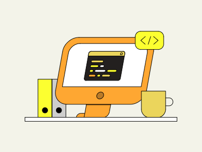

Welcome to My Resume Page!

Hello!
Check out my Resume below !
Web Developer | Electrical Engineer
Education
2003- The University of Zambia
Bachelor of Engineering- Electrical Engineering
Work Experience
2003-2003 - Mopani Copper Mines PLC
Assistant Electrical Engineer
- Assisted in the designs and implementation of electrical systems
- Conducted maintenance and troubleshooting of electrical equipment
2004-2007 - Konkola Copper Mines PLC
Electrical Engineer
- Designed and supervised the installation of electrical systems
- Implemented preventive maintenance programs for electrical equipment
2007-2014 - Road Transport and Safety Agency
Electrical Engineer
- Designed, procured and supervised installation of automated vehicle testing equipment
- Conducted feasibility studies and cost estimation for projects
2014-2017 - Captain Electrical Limited
Projects Director
- Oversaw project planning, budgeting and qualiity control
- Team leader- Liquid Telecoms installation of last mile fiber networks projects
2017-2023 - ZESCO Limited
Senior Electrical Projects Engineer
- Develop and implement electrical projects for power distribution
- Collaborate with cross-functional teams to ensure project success
2022-2023 - Flavory Enterprise Limited
Founder & Senior Web Developer
- Founded and managed a Web Developmentcompany
- Implemented responsive and user-friendly websites for clients
Skills
- Proficient in HTML5, CSS3, Bootstrap, CSS Flexbox & Grid
- Project Management
- Strong understanding of responsive web design principles
- Experience with Javascript and jQuery
- Knowledge of version control systems like Git
- Excellent problem-solving trouble-shooting abilities
- Effective communication and teamwork skills